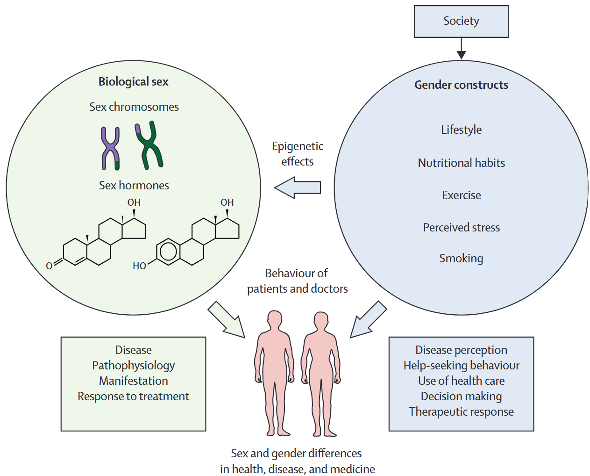
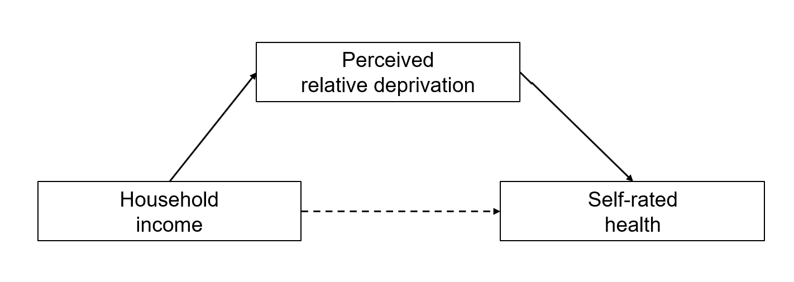
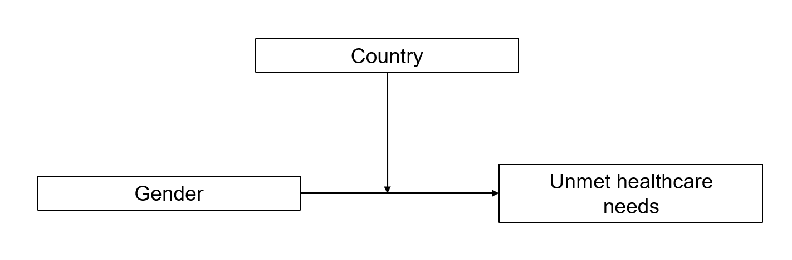
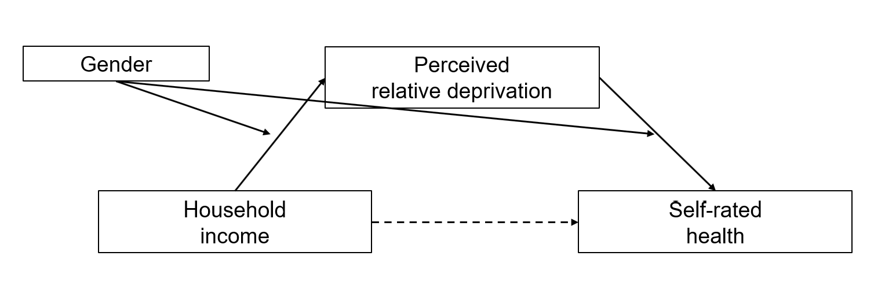

flowchart TB
A["Migration history"]
B["Gender"]
C["Socioeconomic position"]
D["Intersectional<br/>social positions"]
E["Unequal resources,<br/>risks and experiences"]
F["Health outcomes"]
A --> D
B --> D
C --> D
D --> E
E --> F
classDef position fill:#f5eeee,stroke:#b51f2e,color:#242424
classDef pathway fill:#f3f4f6,stroke:#9ca3af,color:#242424
class A,B,C,F position
class D,E pathway
8. “Horizontal” health inequalities: gender and migration
5 November 2026
Why do health outcomes differ between women and men, between people with different migration histories, and between racialised groups? And how do these inequalities intersect with socioeconomic position?
Today we move from vertical to horizontal health inequalities, examining gender, migration, race and ethnicity. We use Gkiouleka and Huijts (2020) to illustrate how an intersectional perspective can reveal inequalities that average group comparisons overlook.
In the second part, we focus on your empirical research papers: research questions, structure, assessment criteria, accurate referencing and statistical approaches to mediation and moderation.
Learning objectives: By the end of today’s session, you should be able to distinguish key concepts related to gender, migration and racialisation; explain mechanisms behind horizontal health inequalities; interpret intersectional evidence; and understand the expectations and methodological options for your empirical research paper.
NoteMandatory reading
Gkiouleka, A., & Huijts, T. (2020). Intersectional migration-related health inequalities in Europe: Exploring the role of migrant generation, occupational status & gender. Social Science & Medicine, 267, 113218. Read the article.
As you read, pay particular attention to Tables 1, 3 and 5 and the authors’ discussion of what an intersectional analysis reveals that an average migrant/non-migrant comparison misses.
Recap: Last week’s session
Last week, we examined socioeconomic inequalities in healthcare access, focusing on how income, education and social status shape people’s opportunities to obtain healthcare. We also discussed barriers to access, including financial and institutional factors.
In his guest lecture, Christian Schmid provided a perspective on healthcare access and inequalities in practice.
Today we broaden the perspective: socioeconomic inequalities remain important, but health opportunities also differ according to gender, migration history and racialisation — often in ways that intersect with socioeconomic position.
From vertical to horizontal health inequalities
So far, we have mainly examined vertical health inequalities: differences structured by socioeconomic position, including income, education, and occupation.
We now turn to horizontal health inequalities, focusing on gender, migration status, race, and ethnicity.
Source: Own illustration.
The distinction is useful, but horizontal and vertical inequalities are not independent. Gender, migration status, and ethnicity often interact with socioeconomic position in shaping health outcomes.
This intersection is a central theme of today’s session.
1. Gender, sex and health inequalities
Before we discuss health inequalities, it is useful to distinguish between sex and gender. The two are related, but they are not the same.
NoteSex
Sex refers to biological attributes, including chromosomes, reproductive anatomy, hormones, and sex-linked physiology.
In health research, sex matters because biological differences can shape:
- disease risk
- symptoms and clinical presentation
- pharmacological responses
- treatment effects
NoteGender
Gender refers to socially constructed roles, norms, identities, and expectations associated with femininity, masculinity, and other gendered positions.
In health research, gender matters because it shapes:
- health behaviours
- exposure to stress and risk
- help-seeking behaviour
- interactions with health professionals
- access to care and treatment decisions
Sex and gender are analytically distinct, but in practice they often interact. Biological processes can shape behaviour, while social and gendered experiences can themselves affect biology and health.

The key message of the figure is that sex and gender are deeply interrelated. Biological sex influences disease processes and treatment responses, while gender shapes behaviour, stress exposure, care-seeking, and providers’ decisions. At the same time, gendered experiences can also affect biology, for example through stress or health-related behaviour.
The gender health paradox
A long-standing observation is that women tend to live longer, whereas they often report worse health and spend a larger share of their lives with illness or limitations. This is sometimes summarised as “women get sicker, men die quicker” (e.g., Macintyre et al. 1996; Bambra et al. 2021; Bartley and Kelly-Irving 2025, chap. 8). The pattern varies by age, setting and outcome; it is not a universal rule for every disease.
| Outcome considered | Typical pattern in many European populations | Why the distinction matters |
|---|---|---|
| Life expectancy / mortality | Female advantage in survival | Men have higher mortality for many major causes of death |
| Self-rated health, pain or disability | Female disadvantage in several measures | Living longer does not necessarily mean living longer in good health |
| Specific diagnoses and treatments | Depends on the condition | Incidence, diagnosis, treatment and survival should be analysed separately |
Building on our earlier session on theories of health inequality, we can distinguish several possible explanations and pathways:
- Biological explanations: Genetic, epigenetic and hormonal differences influence physiology, disease risks and treatment responses.
- Behavioural explanations: Gender norms shape health-related behaviours, such as smoking, alcohol consumption, diet and help-seeking.
- Material explanations: Gender differences in income, employment, working conditions and unpaid care responsibilities affect health.
- Psychosocial explanations: Unequal autonomy, power, social relationships and experiences of discrimination may produce differences in stress and health.
These explanations are not mutually exclusive. Biological and social processes interact, and gender inequalities may also arise through differences in diagnosis and treatment within the healthcare system.
NoteGender inequalities in Swiss healthcare
A 2024 report by the Swiss Federal Council identifies persistent gender inequalities in Switzerland’s healthcare system, despite its generally high quality.
Key problems include:
- Medical research: Women remain underrepresented in clinical research, and many conditions affecting women are insufficiently studied.
- Diagnosis: Diseases affecting women are sometimes diagnosed later, and gender-specific symptoms may be overlooked.
- Treatment: Women may receive less appropriate or less intensive treatment, potentially contributing to poorer outcomes.
- Knowledge gaps: Sex- and gender-specific evidence is not consistently incorporated into medical education and clinical practice.
A concrete example: A Swiss study of cardiac arrest patients found that women were less likely to be admitted to intensive care and received less intensive treatment. Differences in age and comorbidities partly complicate the interpretation of these findings.
Policy response: The Swiss National Research Programme “Gender Medicine and Health” (NRP 83), with a budget of CHF 11 million, aims to improve the evidence base on biological and social aspects of gender in health and healthcare.
Beyond binary measures
Many large surveys and administrative datasets have historically used binary sex/gender measures. Such variables are often useful for reproducing earlier analyses, but they do not fully capture gender identity or the experiences of trans and non-binary people.
A recent systematic review documents substantial health inequalities affecting transgender and gender-diverse populations, including disparities in physical and mental health (Scheim et al. 2024).
Swiss research documents substantial health inequalities affecting LGBT people, particularly in mental health: LGB respondents were around four times as likely to report a lifetime suicide attempt as the general population, with trans and non-binary people facing especially pronounced disadvantages. LGBT respondents also reported frequent discrimination, including in healthcare (26.6%), and were more than twice as likely to forgo medical care because of a lack of trust in healthcare providers (16.2% versus 6.9%) (Krüger et al. 2022, see also https://www.bag.admin.ch/de/gesundheit-von-lgbt-personen).
A recent qualitative study of 16 trans men and non-binary/agender people navigating masculinising transition pathways in Switzerland identified fragmented health information, uneven provider competence and binary assumptions in healthcare. Participants often relied on peer networks and digital resources to compensate for gaps in formal health information (Ort et al. 2026).
The distinction matters when reporting what a dataset can and cannot tell us. ESS Round 11 includes a dedicated module exploring gender identities, discrimination and attitudes towards gender equality (Alexander et al. 2026).
2. Migration, race, ethnicity and racialisation
Three concepts to distinguish
Migration status, ethnicity and race are related, but distinct concepts. Understanding these differences is important because they capture different dimensions of social inequality and potentially different pathways to health inequalities.
| Concept | Definition | Relevance for health inequalities |
|---|---|---|
| Migration status | Whether someone has migrated, or has a migration background. This can also include distinctions by country of birth, citizenship and residence status. | Migration experiences, legal rights, language barriers, working conditions and access to healthcare may shape health. |
| Ethnicity | Social identification or classification based on shared cultural characteristics, ancestry, language, religion or history. | Ethnic inequalities may reflect differences in social position, discrimination, exclusion and access to resources. |
| Race | A socially and politically constructed classification historically associated with perceived physical characteristics and ancestry. It does not represent discrete biological divisions of humanity. | Racial categorisation and racism can structure exposure to discrimination, material disadvantage, chronic stress and unequal treatment in healthcare. |
Why does the distinction matter?
- A person can be a migrant without belonging to a racialised minority, or belong to a racialised minority without having migrated.
- Ethnic identification and racial classification depend on social and historical contexts. The same group may be categorised differently across countries.
- Migration status is not a proxy for race or ethnicity. Analyses based only on nationality or country of birth may therefore miss important forms of discrimination and health disadvantage.
The aim is not to attribute health differences to supposedly inherent characteristics of population groups, but to understand how social classifications, migration experiences and unequal power relations shape health opportunities.
From race to racialisation
Bartley and Kelly-Irving (2025, chap. 9) suggest using the concept of “racialisation” to shift attention from racial categories to the social processes through which inequalities are produced.
While race refers to socially constructed categories, racialisation describes the process through which people are categorised as racially or ethnically different, often to justify discrimination or unequal treatment.
For example, a person born and raised in Switzerland may be perceived as a “foreigner” because of their skin colour, name or religion. They may experience discrimination in employment, housing or healthcare, despite having no personal migration experience.
The concept therefore shifts our attention from who belongs to which group to how social differences are constructed and translated into unequal opportunities and treatment.
For understanding health inequalities, the central question is not whether racial groups have inherently different health characteristics, but how racialisation and discrimination shape the social conditions that influence health.
Racism as a fundamental cause of health inequalities
Building on our earlier discussion of fundamental cause theory, Phelan and Link (2015) argue that racism can be understood as a fundamental cause of health inequalities.
Importantly, racism is not limited to individual acts of prejudice and discrimination. It can also operate through systemic and structural racism (Bailey et al. 2021; Braveman et al. 2022).
- Individual discrimination: Racist harassment, prejudiced attitudes or unequal treatment, for example by employers or healthcare professionals.
- Systemic and structural racism: Inequalities embedded in institutions, laws, policies and established practices, which systematically disadvantage racialised groups, even without explicitly racist intentions.
Racism can affect health through multiple pathways:
- Material: Unequal access to employment, income, housing and other resources.
- Psychosocial: Chronic stress, exclusion and reduced autonomy.
- Healthcare: Unequal access, diagnosis and treatment.
- Political: Unequal representation, rights and influence over decisions affecting health.
The fundamental cause argument: Racism shapes the unequal distribution of socioeconomic resources (income, education, occupation), but can also affect health independently of socioeconomic position, for example through discrimination, political exclusion or unequal treatment in healthcare. Crucially, racial health inequalities can persist even when specific mechanisms change, because new forms of disadvantage may replace older ones. Racism can therefore influence multiple health outcomes through different pathways over time. This helps explain why racial health inequalities cannot necessarily be “explained away” by controlling for socioeconomic position (Phelan and Link 2015).
The “healthy immigrant effect”
Migration does not necessarily imply a health disadvantage. The healthy immigrant effect refers to the observation that immigrants, particularly recent arrivals, often have better health than the native-born population in their destination country.
Kennedy et al. (2015) examine this phenomenon in four major destination countries (Australia, Canada, the UK and the USA). They find that recent immigrants generally report fewer chronic conditions and have lower rates of obesity and smoking than comparable native-born residents.
Why might immigrants be healthier? Several explanations have been proposed:
- Positive self-selection: People who migrate tend to be younger, healthier and often better educated than those who remain in their country of origin.
- Institutional selection: Immigration policies may favour younger, highly educated or skilled applicants, who also tend to be healthier.
- Health behaviours: Immigrants may arrive with healthier behaviours, such as lower smoking rates.
- Return migration (“salmon effect”): Immigrants experiencing poor health may be more likely to return to their country of origin, potentially making those who remain appear healthier.
A key contribution of Kennedy et al. (2015) is to compare immigrants not only with native-born residents of their destination country, but also with non-migrants in their countries of origin. They find evidence that immigrants are positively selected on health-related characteristics, particularly age and education, although these observable differences do not fully explain their health advantage.
The healthy immigrant effect is therefore partly a selection effect: health influences who migrates, rather than migration necessarily improving health. However, the strength of this effect varies across migrant groups and health outcomes, and health advantages may diminish with longer residence in the destination country.
NoteSwiss example: healthcare access for people without regular residence status
The experiences of sans-papiers make the institutional dimension concrete: affordability, fear of being identified, language needs and access to insurance can affect when people seek treatment. See migesplus for multilingual resources, and Temesvary et al. (2025) for evidence on health vulnerabilities among undocumented Central and Eastern European migrants in Switzerland.
A useful policy example is the City of Zurich’s decision on care for uninsured residents (January 2026). This addresses an institutional barrier rather than asking individuals simply to change their health behaviour.
3. Intersectionality: beyond one category at a time
What is intersectionality?
The concept of intersectionality originates in Black feminist scholarship and is particularly associated with Kimberlé Crenshaw (Carbado et al. 2013).
Bowleg (2012) explains that intersectionality focuses on how multiple social positions (such as gender, race and class) intersect within broader systems of power, privilege and oppression.
Two implications are particularly important for health inequality research:
- Multiple social positions: People simultaneously occupy different positions in society. For example, the health experiences of migrant women may differ from those of migrant men or non-migrant women.
- Interconnected systems of inequality: Gender, migration and socioeconomic position do not necessarily operate independently. Their effects depend on the social, political and institutional contexts in which they intersect (Gkiouleka et al. 2018).
Watch: Kimberlé Crenshaw – The urgency of intersectionality (TED Talk)
How might these inequalities affect health?
The diagram illustrates how intersecting social positions may shape access to resources, exposure to risks and experiences of institutions. It is a conceptual illustration, not an identified causal model.
Intersectionality in practice: Gkiouleka and Huijts (2020)
Our mandatory reading applies an intersectional perspective to migration-related health inequalities in Europe (Gkiouleka and Huijts 2020).
The authors argue that migration-related health inequalities cannot be understood by examining migrant status alone. Instead, they investigate how health differences vary across three dimensions:
- Migrant generation: Non-migrants, first-generation migrants and second-generation migrants.
- Gender: Women and men.
- Occupational status: Services, intermediate occupations, manual occupations and people outside the labour market.
This produces 24 intersectional groups (3 × 2 × 4), each representing a different combination of social positions.
Research question: How do migration-related health inequalities differ according to gender and occupational status?
Data and methods
- Data: European Social Survey (ESS), six waves from 2004 to 2014.
- Sample: 166,734 individuals aged 25–75 across 27 European countries.
- Health outcomes:
- Poor or very poor self-rated health;
- health problems that hamper daily activities.
- Method: Multilevel logistic regression, with individuals nested within countries. Models are estimated separately by migrant generation and include interactions between gender and occupational status, controlling for age, education and survey wave.
- Presentation: Predicted probabilities allow comparisons between different intersectional groups.
What do they find?
1. The healthy migrant effect is not universal.
Among manual workers, first-generation migrants have a lower predicted probability of reporting poor health than non-migrants:
| Manual occupations | Non-migrants | First-generation migrants | Second-generation migrants |
|---|---|---|---|
| Men | 10.3% | 8.6% | 11.0% |
| Women | 14.7% | 13.0% | 16.3% |
Source: Gkiouleka and Huijts (2020), Table 3. Adjusted predicted probabilities.
However, this advantage is not equally apparent across all occupational categories. For example, first-generation migrant men in intermediate occupations report worse health than their non-migrant counterparts.
2. Gender inequalities depend on occupational position and migration background.
Across many of the examined groups, women have a higher probability of reporting poor health than men. Yet the size of these differences varies considerably.
For example, among non-migrants, the gender gap in poor health is 0.9 percentage points in the services category, but 4.4 percentage points among manual workers (Table 3).
3. Second-generation migrants do not necessarily enjoy the health advantages observed among first-generation migrants.
For example, second-generation migrant women in manual occupations have a predicted probability of poor health of 16.3%, compared with 13.0% among first-generation migrant women (Table 3).
These findings demonstrate that migration background alone is insufficient to describe the distribution of health inequalities.
Discussion
- Why might first-generation migrants in manual occupations be healthier than comparable non-migrants? How does this relate to the healthy migrant effect discussed earlier?
- Why might the gender gap in health be larger in some occupational categories than others?
- What would we miss if we estimated only the average difference between migrants and non-migrants, controlling for gender and socioeconomic position?
Takeaway: An intersectional perspective reveals that the relationship between migration and health depends on other social positions. As Gkiouleka and Huijts (2020) demonstrate, the same migration status can be associated with quite different health outcomes depending on gender and occupational class.
Importantly, these are observational associations. The study documents intersectional patterns but does not identify the causal effects of discrimination, migration policies or other institutional mechanisms. Its analysis is also constrained by binary gender measurement and the likely underrepresentation of migrants with precarious legal status or limited proficiency in survey languages.
4. Applied focus: Which ESS and ISSP indicators can we use?
| Topic / concept | ESS: possible measures and rounds | ISSP: possible measures and modules |
|---|---|---|
| Gender / sex measure | Core sex coding gndr; Round 11 dedicated gender module includes self-reported gender identity |
Standard sex background variable; generally not a comprehensive gender identity measure |
| Migration generation | Respondent born in country brncntr; mother’s / father’s birthplace indicators mocntr, facntr (check round and exact labels) |
Respondent and parental birthplace/background variables in some modules; not consistently sufficient to recreate ESS migrant generation; check codebook |
| Citizenship, ancestry, language and discrimination | Citizenship and ancestry/belonging; blgetmg minority identification; reported discrimination dscrgrp; verify round-specific wording |
Ethnic group / citizenship / parental origin as available; country-specific background and module variation. ISSP 2011: CH_ETHN records nationality (including Swiss and dual nationality) for Switzerland; not a direct measure of ethnicity or migration generation |
| Gender norms and sexism | Round 11: gender identities, sexism, perceived discrimination and equality policy preferences | - |
| Attitudes towards migration | Core immigration evaluations, e.g. imueclt, imwbcnt, imbgeco (verify item and round); Rounds 1, 7 and 12 include dedicated immigration content |
National Identity 2013 and National Identity and Citizenship 2023: national belonging, immigration and citizenship attitudes |
| Discrimination or perceived fairness in health care | Selected rounds; Round 11 gender module includes unfair treatment in healthcare due to gender | Health and Health Care 2021: v12 (Q7c), perceived access for women compared with men; v13 (Q7d), perceived access for citizens compared with non-citizens. Both use a five-point easier/same/harder scale |
| Healthcare entitlement for non-citizens | — | Health and Health Care 2011: V20 (Q9a); 2021: v8 (Q6a). Agreement that people without citizenship should have access to publicly funded healthcare (1 = strongly agree to 5 = strongly disagree) |
Sources / codebooks: ESS Data Portal; ISSP Health 2021; ISSP background-variable documentation.
5. Your empirical research paper: from question to results
The empirical paper is a small, independent research project, not a collection of descriptive charts. Your task is to formulate an answerable question, connect it to the literature, analyse ESS or ISSP data, and interpret what the evidence does—and does not—show. The emphasis is on appropriate application and clear explanation, not methodological sophistication for its own sake.
5.1 Start with a “CARS” research question
A good research question is CARS:
| Criterion | What to check |
|---|---|
| C — Clear | Can readers understand the question immediately? Are the central concepts defined? |
| A — Answerable | Can the available data and methods answer it credibly? Are the necessary variables and sample sizes available? |
| R — Relevant | Why does it matter for research on health inequalities and for society or policy? |
| S — Specific | Is the population, place, outcome and proposed relationship sufficiently focused for a short paper? |
From broad topic to research question
- Too broad: “Gender and mental health in Europe.”
- More analytical: “Is the association between traditional gender-role attitudes and poor mental health different for women and men in Switzerland?”
- Another current project idea: “Did the gender gap in unmet healthcare needs change between ESS Round 7 and Round 11 in Switzerland, compared with Sweden?”
The first question suggests moderation (an interaction with gender). The second suggests a comparison across countries and survey rounds, potentially including a gender × country × period interaction. Neither question is automatically causal.
TipA useful test
Can you write down (1) the outcome, (2) the main explanatory variable, (3) the population or countries, and (4) the expected relationship—and explain why that relationship might exist? If not, narrow the question before starting the analysis.
5.2 Structure: IMRaD is a useful default, not a rigid rule
A short empirical paper often follows IMRaD:
| Section | Main purpose |
|---|---|
| Introduction | Present the problem, research question, relevance, relevant literature and expected relationship(s). |
| Methods | Describe the dataset and sample, operationalisation of variables, and analytical strategy. Explain why the chosen methods are appropriate for answering the research question. |
| Results | Present descriptive evidence and analytical results in a logical order, with clear tables and figures. |
| Discussion | Answer the research question, situate the findings in the literature, discuss alternative explanations and limitations, and draw cautious implications. |
The structure is flexible. A theoretical background subsection is usually not necessary. A one-paragraph conclusion or an abstract may be useful. In a 2,500–3,000-word paper (or 3,500–4,000 words for a pair), the introduction should not crowd out the empirical analysis.
5.3 Assessment: the GMF template on Moodle
The paper is assessed according to the same broad criteria as the GMF Master’s thesis review, adapted to the shorter format. Consult the complete evaluation template on Moodle.
| Criterion | Questions to ask yourself |
|---|---|
| Research question | Is it clearly defined, and is it answered throughout the paper? |
| Background and motivation | Is the context adequate? Is the contribution clearly stated? |
| Data and methods | Is the design appropriate, are the methods used correctly, and are they explained sufficiently? |
| Presentation of results | Are tables and figures correct, understandable and well integrated into the text? |
| Interpretation and discussion | Are findings interpreted correctly, linked to the research question and existing evidence, and are limitations acknowledged? |
| Formal quality | Is the writing clear, the literature cited correctly, and the length and level of detail appropriate? |
5.4 Formal standards: precise writing and referencing
Formal quality: Accurate referencing is essential
One of the most common problems occuring in student assignments is incorrect or misleading referencing. This is potentially a serious issue: scientific arguments must be supported by sources that readers can verify.
There are two particularly important problems:
- Non-existent or incorrect references: Some cited publications did not exist, or their titles, authors or DOI links were incorrect. AI tools such as ChatGPT can generate plausible-looking but fabricated references.
- References that do not support the claim: This has become the more common issue. A publication may exist but address a different topic, provide evidence for a much narrower claim, may be of low quality, or not contain the specific finding attributed to it.
How to avoid these problems:
- Verify every reference: Does the publication exist exactly as cited? Does the DOI work? Have you consulted the actual source?
- Check every claim against its source: Does the publication genuinely support the specific statement you are making? Avoid generalising beyond what the evidence shows.
- Cite precisely: Whenever possible, indicate the relevant page number(s), particularly for specific findings, theoretical arguments or definitions. Use direct quotations when the exact wording matters.
- Assess source quality: Consider the study design, sample size, publication outlet and methodological quality.
- Search systematically: Identify two or three relevant key papers, then use backward and forward citation searches (e.g. Google Scholar) to find additional literature.
ImportantA note on AI tools
AI tools can help you find ideas and understand unfamiliar literature, but never assume that an AI-generated citation is correct.
You are responsible for ensuring that every cited source exists and actually supports the statement for which it is cited.
A reference that looks convincing is not necessarily a valid reference.
Remember: Incorrect references do not merely constitute a formal problem. They undermine the credibility of your empirical findings and theoretical arguments, and will negatively affect the evaluation of your paper.
5.5 Methods workshop: three different questions
The examples below use one wholly synthetic dataset (2,400 fictional respondents in Switzerland and Sweden). Download the CSV and place it alongside this .qmd file. The data contain country (CH/SE), woman (0/1), gender, age, education, income (decile, 1–10), deprivation (0–10), poor_health (0/1) and unmet_need (0/1). The figures and coefficients are invented for teaching and are not empirical evidence about either country.
Start by running this code in R (once); the later examples all use the same dat object:
library(dplyr)
library(ggplot2)
library(modelsummary)
library(marginaleffects)
dat <- read.csv("synthetic_health_inequalities.csv")
dat$country <- factor(dat$country, levels = c("SE", "CH"))
dat$education <- factor(dat$education,
levels = c("Low", "Medium", "High"))
dat$gender <- factor(dat$gender, levels = c("Man", "Woman"))Code blocks are for students to run separately in R; they are not executed when this website is rendered.
NoteThree distinct concepts
- Mediation: Through what mechanism might X be associated with Y?
X → M → Y - Moderation: For whom, or under which conditions, does the X–Y association differ?
X × Z → Y - Moderated mediation: Does the proposed indirect pathway through M itself differ across groups or conditions?
All three can be explored with regression models. A regression specification alone does not establish a causal mechanism.
A. Mediation: income, relative deprivation and health
Example research question: To what extent might perceived relative deprivation account for the association between household income and self-rated health?
Hypothesised pathway: Income → Relative deprivation → Poor health.

# Using the synthetic data loaded above
# Total association (without the proposed mediator)
total <- lm(poor_health ~ income + age + gender + education, data = dat)
# Path a: income -> mediator
med <- lm(deprivation ~ income + age + gender + education, data = dat)
# Paths b and c': mediator and income -> health
out <- lm(poor_health ~ income + deprivation + age + gender + education,
data = dat)
# Exploratory indirect association (linear probability model)
a <- coef(med)["income"]
b <- coef(out)["deprivation"]
indirect_association <- a * b
modelsummary::modelsummary(
list("Total association" = total, "Mediator" = med,
"Outcome + mediator" = out),
output = "markdown",
stars = TRUE,
gof_omit = "AIC|BIC|Log.Lik.|RMSE"
)
print(indirect_association)Interpretation: The product a × b describes a model-based indirect association in this linear specification. To quantify uncertainty, use a bootstrap confidence interval; to support a causal mediation interpretation, stronger assumptions are required (including no unmeasured confounding of the mediator–outcome relationship and appropriate temporal ordering). With cross-sectional data, frame this as an exploratory mechanism analysis, not proof of mediation.
For a compact picture of the proposed relationships, report the income → deprivation coefficient from med and the deprivation → poor_health coefficient from out, including confidence intervals. Avoid presenting a product of logistic-regression coefficients as a simple indirect effect on the probability scale.
B. Moderation: does the gender gap in unmet healthcare needs differ by country?
Example research question: Is the difference in unmet healthcare needs between women and men larger in Switzerland than in Sweden?
This is a moderation question: country modifies the association between gender and unmet need. The dependent variable can be binary, so logistic regression is appropriate.

# Synthetic data: woman = 0/1; country = SE or CH
m1 <- glm(unmet_need ~ woman + country + age + education,
data = dat, family = binomial)
m2 <- glm(unmet_need ~ woman * country + age + education,
data = dat, family = binomial)
# Models side by side
modelsummary::modelsummary(
list("Main effects" = m1, "Gender × country" = m2),
exponentiate = TRUE, output = "markdown")
# Plot adjusted predicted probabilities (not log-odds)
marginaleffects::plot_predictions(
m2, condition = c("woman", "country"), type = "response") +
ggplot2::labs(x = "Woman (0 = no, 1 = yes)",
y = "Predicted probability of unmet need",
colour = "Country")The interaction coefficient tests a difference on the log-odds scale; an interaction on that scale does not automatically imply the same result on the probability scale. Use predicted probabilities or average marginal contrasts to communicate the substantive size of the gender gaps. When comparing ESS rounds, add survey period and consider whether the gender gap changes differently in Switzerland and Sweden (a three-way interaction), if sample sizes and comparable measures permit.
C. Moderated mediation: does relative deprivation matter differently for women and men?
Example research question: Does the proposed indirect association between income and poor health through relative deprivation differ by gender?
One possible specification lets gender moderate both income → deprivation and deprivation → health.

# C. MODERATED MEDIATION: Comparing mediation pathways by gender
library(dplyr)
library(modelsummary)
# Split sample
men <- filter(dat, woman == 0)
women <- filter(dat, woman == 1)
# Step 1: Total association (income -> health)
m1_men <- lm(poor_health ~ income + age + education, data = men)
m1_women <- lm(poor_health ~ income + age + education, data = women)
# Step 2: Mediator model (income -> deprivation)
m2_men <- lm(deprivation ~ income + age + education, data = men)
m2_women <- lm(deprivation ~ income + age + education, data = women)
# Step 3: Outcome model (income + deprivation -> health)
m3_men <- lm(poor_health ~ income + deprivation +
age + education, data = men)
m3_women <- lm(poor_health ~ income + deprivation +
age + education, data = women)
# Present all six regressions side by side
modelsummary(
list(
"M: Total eff. (Y)" = m1_men,
"M: Mediator (M)" = m2_men,
"M: Direct eff. (Y)" = m3_men,
"W: Total eff. (Y)" = m1_women,
"W: Mediator (M)" = m2_women,
"W: Direct eff. (Y)" = m3_women
),
output = "markdown",
stars = TRUE,
gof_omit = "AIC|BIC|Log.Lik.|RMSE"
)
# Calculate indirect associations for each group
indirect <- data.frame(
gender = c("Men", "Women"),
estimate = c(
coef(m2_men)[["income"]] * coef(m3_men)[["deprivation"]],
coef(m2_women)[["income"]] * coef(m3_women)[["deprivation"]]
)
)
print(indirect)
# Visualise
library(ggplot2)
ggplot(indirect, aes(x = gender, y = estimate)) +
geom_point(size = 3) +
geom_hline(yintercept = 0, linetype = "dashed") +
labs(
x = NULL,
y = "Indirect association: income -> deprivation -> health"
) +
theme_minimal()These estimates are illustrative and have no confidence intervals. The appropriate formal test concerns the difference between the two indirect associations, ideally with a bootstrap confidence interval. In this specification, other pathways might also vary by gender, and cross-sectional surveys offer limited evidence on timing or causality.
5.6 Begin with Table 1: Describe your sample
A compact Table 1 of sample characteristics is common in health and social science research, and I recommend it for your empirical papers. It establishes who is in the analysis, what the variables look like, and whether the comparison groups differ. Include the analytical sample size, relevant demographic and socioeconomic characteristics, and key outcomes. For this assignment, one concise table is enough; do not add irrelevant variables merely to make it longer.
The table may be shown overall or by the key groups being compared (here, Switzerland and Sweden). For categorical variables report n (%) or percentages; for continuous variables use a mean and SD or a median and IQR as appropriate. State any missing-data exclusions and whether the summaries are weighted. Descriptive group differences are not automatically statistically significant or causal.
# Table 1: descriptive statistics for the same synthetic sample
table1 <- dat |>
group_by(country) |>
summarise(
N = n(),
`Women (%)` = round(100 * mean(woman), 1),
`Mean age` = round(mean(age), 1),
`Higher education (%)` = round(100 * mean(education == "High"), 1),
`Mean income decile` = round(mean(income), 2),
`Poor health (%)` = round(100 * mean(poor_health), 1),
`Unmet need (%)` = round(100 * mean(unmet_need), 1),
.groups = "drop"
)
knitr::kable(table1, caption = "Table 1. Sample characteristics by country")Because tables do not count towards the stated word limit, they can efficiently present relevant information. They do not replace explanation in the text: introduce the table and discuss the most important descriptive patterns, rather than overloading it or moving substantive arguments into table notes.
5.7 Present models in tables—and explain the findings
Good empirical reporting usually proceeds from simple to more complex models: describe the sample, estimate a baseline association, add theoretically justified covariates, then test the interaction or proposed pathway. Do not add variables mechanically: some may be confounders, while others are mediators whose adjustment changes the question.
# A consistent regression table: already fitted models m1 and m2
modelsummary::modelsummary(
list("Baseline" = m1, "Interaction" = m2),
exponentiate = TRUE,
statistic = "({std.error})",
stars = TRUE,
output = "markdown")
# For presentation, a coefficient plot can also be used instead of a the table.
modelsummary::modelplot(
list("Baseline" = m1, "Interaction" = m2),
exponentiate = TRUE
) +
ggplot2::geom_vline(xintercept = 1, linetype = "dashed")For logistic models, the exponentiate = TRUE table reports odds ratios (not probability differences). State which quantities the figure displays; distinguish estimates from raw descriptive percentages. A clear graph of predicted probabilities with confidence intervals is often easier for readers to interpret than an isolated interaction coefficient.
Before submitting
- Is the question CARS, and does every part of the paper contribute to answering it?
- Are the analytical choices justified and the results reported accurately?
- Does every citation support the claim beside it? Have you checked the original sources?
- Do the discussion and conclusion distinguish findings, limitations and implications?
Timeline
Present your research question, design and preliminary results during the sessions on 3rd or 10th December.
Each student/group gets the opportunity for one 1:1 feedback meeting with me, either before or after the presentations. Please contact me early on with 3-5 suggestions for meeting slots.
Final submission deadline: 25 January 2027.
6. Takeaways
Three conclusions link this session to our previous work.
- Gender, migration and racialisation are not interchangeable labels. Each points to different processes and measurement problems.
- Average group differences conceal heterogeneity. Intersectional analysis reveals patterns missed by one-dimensional comparisons.
- Inequality is institutional as well as individual. The task is to explain the processes — employment, law, discrimination, family relations and healthcare — that produce unequal exposures.
Final discussion: Consider a policy to improve access to preventive care. Would a single universal campaign be sufficient? What information would you need to understand its effects on women and men across migrant-generation and occupational groups? Could a policy improve average access while leaving certain intersections behind?
NoteFurther reading and resources
- Bartley & Kelly-Irving (2025), Health Inequality, Chapters 8 (gender) and 9 (racialisation).
- Bowleg (2012): The problem with “women and minorities”.
- Phelan & Link (2015): Is racism a fundamental cause of inequalities in health?.
- Delaruelle et al. (2026): Family education and preventive care.
- Hieke et al. (2025): Communication barriers in migrant mental healthcare.
- Evans et al. (2024): MAIHDA tutorial.
- migesplus: multilingual health information in Switzerland.
References
Alexander, Amy, Susan Banducci, Hilde Coffé, Marta Fraile, and Jessica Fortin-Rittberger. 2026. “Measuring Sexism and Gender Attitudes in Round 11 of the European Social Survey.” European Political Science 25 (2): 273–85. https://doi.org/10.1017/S1682098326100435.
Bailey, Zinzi D., Justin M. Feldman, and Mary T. Bassett. 2021. “How Structural Racism Works — Racist Policies as a Root Cause of U.S. Racial Health Inequities.” New England Journal of Medicine 384 (8): 768–73. https://doi.org/10.1056/NEJMms2025396.
Bambra, Clare, Viviana Albani, and Paula Franklin. 2021. “COVID-19 and the Gender Health Paradox.” Scandinavian Journal of Public Health 49 (1): 17–26. https://doi.org/10.1177/1403494820975604.
Bartley, Mel, and Michelle Kelly-Irving. 2025. Health Inequality. An Introduction to Concepts, Theories and Methods. 3rd ed. Polity Press.
Bowleg, Lisa. 2012. “The Problem With the Phrase Women and Minorities: Intersectionality—an Important Theoretical Framework for Public Health.” American Journal of Public Health 102 (7): 1267–73. https://doi.org/10.2105/AJPH.2012.300750.
Braveman, Paula A., Elaine Arkin, Dwayne Proctor, Tina Kauh, and Nicole Holm. 2022. “Systemic And Structural Racism: Definitions, Examples, Health Damages, And Approaches To Dismantling.” Health Affairs 41 (2): 171–78. https://doi.org/10.1377/hlthaff.2021.01394.
Carbado, Devon W., Kimberlé Williams Crenshaw, Vickie M. Mays, and Barbara Tomlinson. 2013. “Intersectionality: Mapping the Movements of a Theory.” Du Bois Review: Social Science Research on Race 10 (2): 303–12. https://doi.org/10.1017/S1742058X13000349.
Gkiouleka, Anna, Tim Huijts, Jason Beckfield, and Clare Bambra. 2018. “Understanding the Micro and Macro Politics of Health: Inequalities, Intersectionality & Institutions - A Research Agenda.” Social Science & Medicine 200 (March): 92–98. https://doi.org/10.1016/j.socscimed.2018.01.025.
Kennedy, Steven, Michael P. Kidd, James Ted McDonald, and Nicholas Biddle. 2015. “The Healthy Immigrant Effect: Patterns and Evidence from Four Countries.” Journal of International Migration and Integration 16 (2): 317–32. https://doi.org/10.1007/s12134-014-0340-x.
Krüger, Paula, Andreas Pfister, Manuela Eder, and Michael Mikolasek. 2022. Gesundheit von LGBT Personen in Der Schweiz: Schlussbericht. Hochschule Luzern.
Macintyre, Sally, Kate Hunt, and Helen Sweeting. 1996. “Gender Differences in Health: Are Things Really as Simple as They Seem?” Social Science & Medicine 42 (4): 617–24. https://doi.org/10.1016/0277-9536(95)00335-5.
Mauvais-Jarvis, Franck, Noel Bairey Merz, Peter J. Barnes, et al. 2020. “Sex and Gender: Modifiers of Health, Disease, and Medicine.” The Lancet 396 (10250): 565–82. https://doi.org/10.1016/S0140-6736(20)31561-0.
Ort, Alexander, Sabrina Stefanelli, and David Weisstanner. 2026. “Health Information Seeking by People Navigating Masculinizing Transition Pathways in Switzerland: Communication Inequalities and Adaptive Approaches.” Health Communication, October, 1–16. https://doi.org/10.1080/10410236.2026.2743838.
Phelan, Jo C., and Bruce G. Link. 2015. “Is Racism a Fundamental Cause of Inequalities in Health?” Annual Review of Sociology 41 (1): 311–30. https://doi.org/10.1146/annurev-soc-073014-112305.
Scheim, Ayden I., Ashleigh J. Rich, Dougie Zubizarreta, et al. 2024. “Health Status of Transgender People Globally: A Systematic Review of Research on Disease Burden and Correlates.” PLOS ONE 19 (3): e0299373. https://doi.org/10.1371/journal.pone.0299373.
Temesvary, Zsolt, Sabrina Roduit, and Matthias Drilling. 2025. “Health Vulnerabilities of Undocumented Central and Eastern European Migrants in Switzerland.” Journal of Migration and Health 11 (January): 100327. https://doi.org/10.1016/j.jmh.2025.100327.